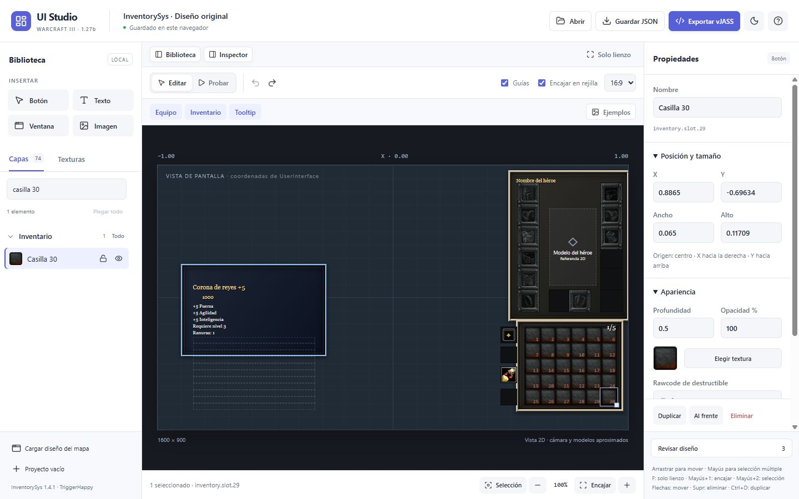
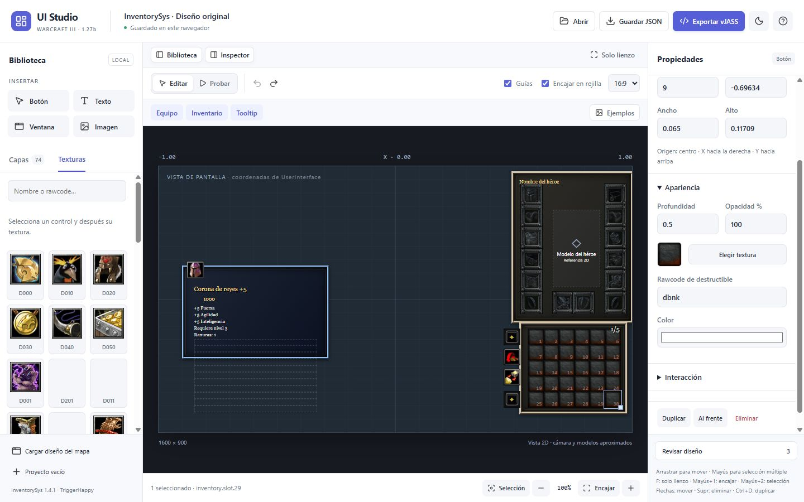
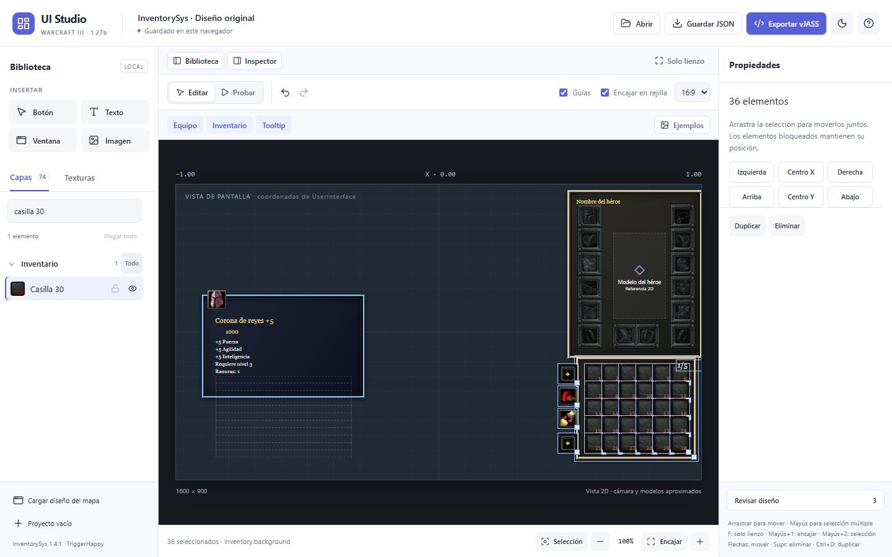
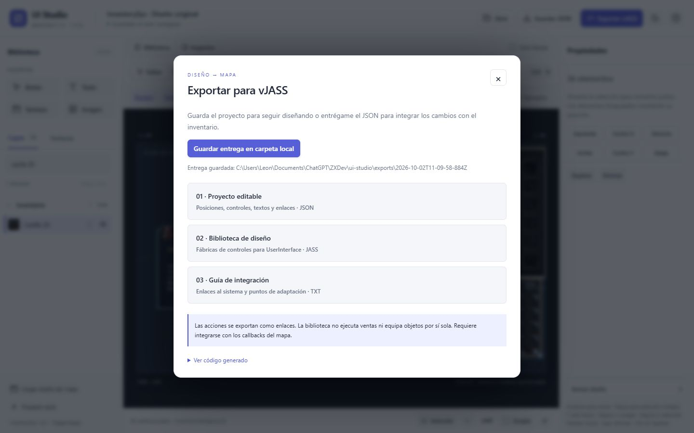
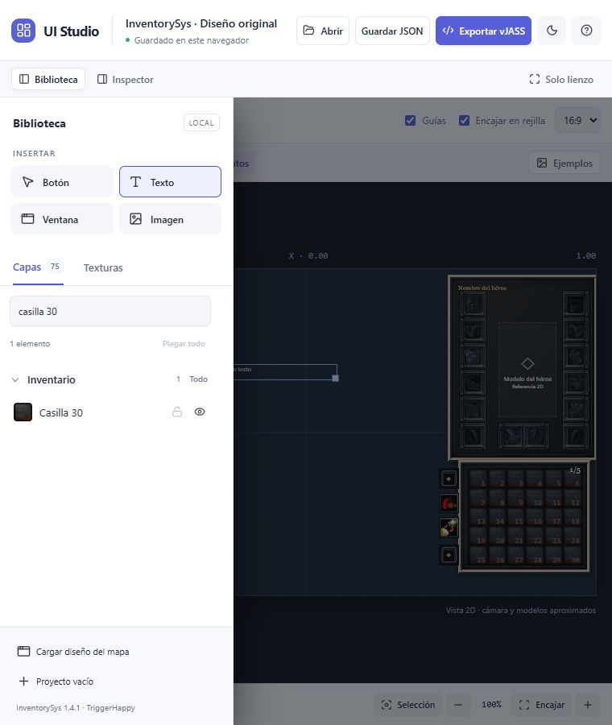
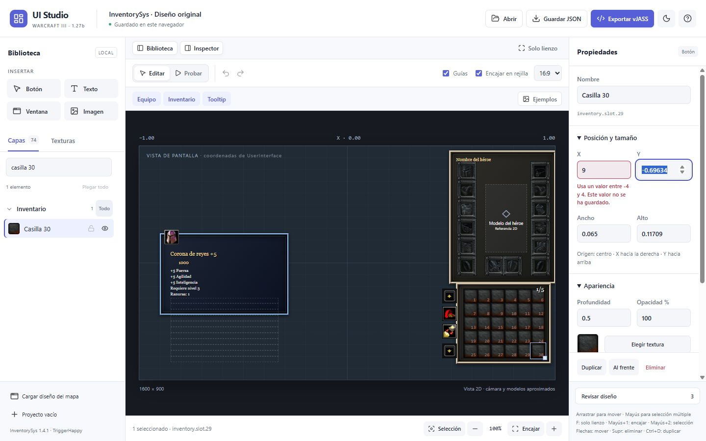
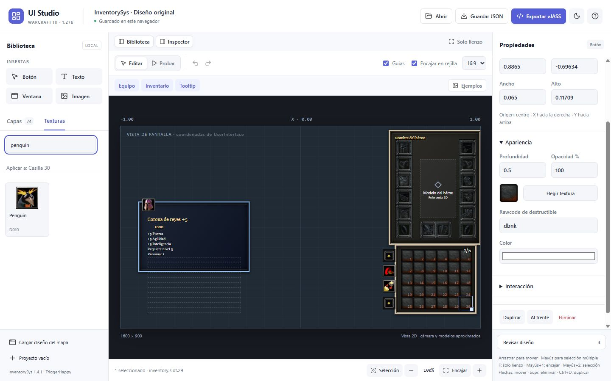
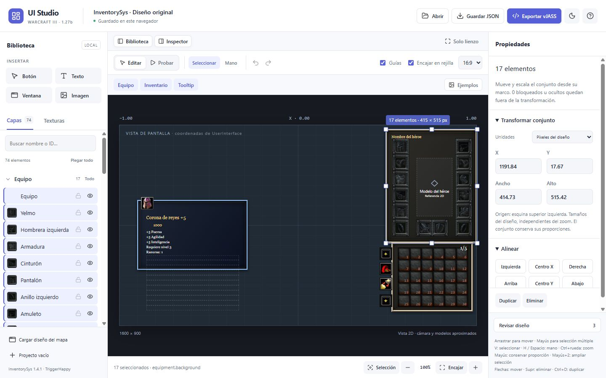

PRUEBA DE USO · 2 OCTUBRE 2026
Un editor más directo y preciso
La base visual ya es consistente. El salto en facilidad de uso está en manipular elementos y conjuntos sobre el lienzo, con medidas comprensibles y respuestas claras.
Veredicto
Había margen importante de mejora funcional. Esta revisión convirtió parte de ese margen en cambios probados: movimiento y escalado directo, selección por recuadro, transformación conjunta, medidas en píxeles y una herramienta para desplazar la vista.
El editor sigue siendo una representación 2D del sistema clásico. El resultado final debe integrarse y verificarse dentro de Warcraft III.
1. Encontrar y editar un elemento
MejoradoPrueba y hallazgo. La búsqueda encuentra Casilla 30 directamente. En la vista general, la casilla mide unos 28 × 28 píxeles de pantalla. El inspector exigía interpretar coordenadas como 0.8865 y −0.69634. Al introducir X = 9, el campo permanecía visible sin explicar que no se había aplicado.
Resultado. Ahora hay ocho tiradores, medidas en píxeles del diseño con opción de coordenadas técnicas, actualización del inspector durante el gesto y mensajes junto al campo inválido. Arrastre y escalado individuales se probaron con el ratón y se deshicieron.

2. Elegir una textura
Mejorado; catálogo aún básicoPrueba y hallazgo. Los 52 recursos se mostraban con su rawcode como texto principal. Faltaba mostrar con claridad a qué elemento se aplicaría la elección.
Resultado. Las tarjetas muestran el nombre y código, indican el destino y resaltan la textura actual. La búsqueda Penguin devuelve un resultado. La clasificación por familias y las búsquedas en español siguen siendo mejoras pendientes.

3. Trabajar con varios elementos
MejoradoPrueba y hallazgo. Con la búsqueda Casilla 30 activa, el encabezado indicaba un resultado, pero Todo seleccionaba 36 elementos. La edición conjunta sólo ofrecía alineación, duplicado y eliminación.
Resultado. Todo respeta ahora los resultados de la búsqueda. Un marco común mueve y escala el conjunto con sus separaciones, marcos y textos. Se probaron 17 elementos de Equipo, escalado con tirador, ancho de conjunto de 350 píxeles, selección por recuadro y deshacer exacto.

4. Guardar y preparar la entrega
Funcional; integración técnica pendientePrueba y hallazgo. El diálogo separa el proyecto editable, la biblioteca JASS y las instrucciones. La integración de acciones en el mapa sigue siendo manual. La ruta de una entrega anterior podía permanecer visible al reabrir el diálogo.
Resultado. La ruta anterior se limpia al abrir una nueva exportación. El esquema v1 y el exportador se conservan. Se verificó una nueva entrega local durante esta revisión. No se modifica automáticamente el W3X.

5. Crear en una ventana estrecha
CorregidoPrueba y hallazgo. A 760 píxeles de ancho, crear Texto dejaba abierta la biblioteca y ocultaba el inspector. La búsqueda previa seguía filtrando las capas, de modo que el nuevo elemento tampoco aparecía en la lista.
Resultado. Crear o duplicar limpia el filtro y muestra el nuevo contenido. En ventanas estrechas abre el inspector y enfoca el texto o nombre. Esc cierra el panel incluso desde un campo. Se creó un texto temporal, se editó y se deshicieron ambas acciones sin cambiar el proyecto original.

Comprobaciones después de los cambios

El campo inválido explica que el valor no se ha guardado. Captura en coordenadas del sistema.
La biblioteca muestra el destino y el nombre de la textura.
Editor resultante: marco de grupo, ocho tiradores y medidas en píxeles.
Validación y límites
- 12 pruebas automáticas superadas: geometría, límites, ocho anclajes, proporción, texto, intercambio de unidades, JSON y exportación.
- Pruebas reales de navegador: búsqueda, selección filtrada, entrada inválida, arrastre, tiradores, escalado numérico conjunto, recuadro, herramienta Mano, creación en ventana estrecha y regreso desde Probar.
- La lectura del proyecto antes y después de deshacer coincidió exactamente. Las pruebas no dejaron cambios en el diseño original.
- Las imágenes se actualizan geométricamente durante el arrastre sin reconstruir sus nodos. Ctrl+rueda y Espacio+arrastrar están implementados; la automatización verificó la herramienta Mano, no esos dos gestos específicos.
- El zoom de selección y el cambio entre píxeles del diseño y coordenadas del sistema se verificaron en la interfaz.
Accesibilidad: se revisaron nombres de controles, estados, navegación de campos y mensajes de error. Los tiradores pequeños cuentan con alternativa numérica. No se realizó una evaluación con lector de pantalla ni una certificación WCAG. No se ejecutó el mapa en Warcraft, no se emularon modelos 3D y no se repitió la compilación JASS del exportador sin cambios.
El siguiente salto recomendado
- Guías de alineación y distancia entre elementos. Facilitar la colocación visual con referencias que aparezcan durante el movimiento.
- Componentes reutilizables. Crear cuadrículas de inventario, ventanas con título y bloques de texto como conjuntos configurables, conservando sus enlaces.
- Edición conjunta de apariencia. Aplicar tamaño, espaciado, textura y estilos comunes a varias casillas con una vista previa reversible.
- Entrega asistida al mapa. Revisar enlaces y requisitos antes de integrar. Esto requiere trabajar sobre los callbacks reales y verificar en 1.27b.
Prioridad: completar primero las guías y los componentes, porque reducen el trabajo manual repetitivo. La fidelidad al motor debe comprobarse en una fase separada de integración.